Canneto Pavese · Oltrepò Pavese
Il territorio per vocazione.
Spumanti metodo classico, Buttafuoco, Bonarda e Pinot Nero: i vini della famiglia Giorgi, dalle colline dell'Oltrepò Pavese a 59 Paesi del mondo.
60 ettari di proprietà1875 le originiEnoteca mer–dom 10–19
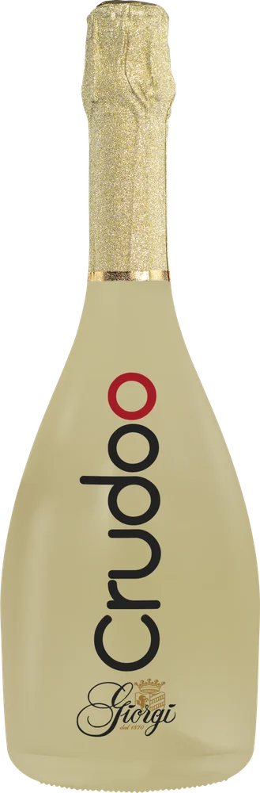
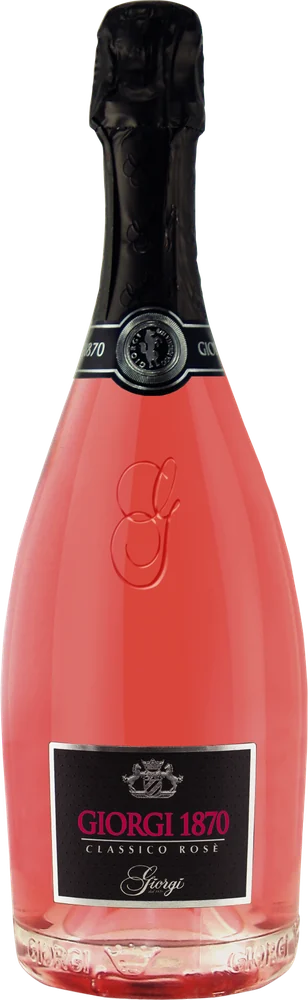
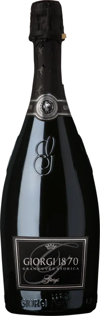
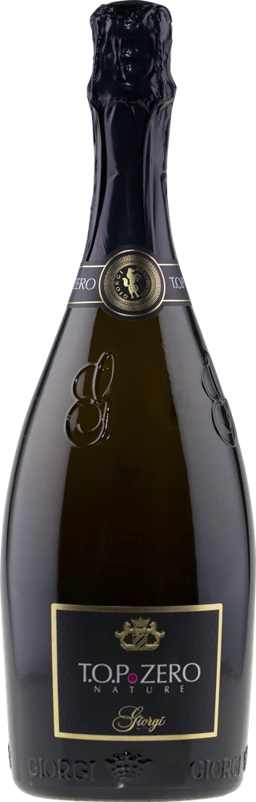
Paesi del mondo in cui sono presenti i vini Giorgi
agenti in Italia
ettari di vigneti di proprietà, in alta collina
conferitori di uve
La storia
Una famiglia di vino.
Le origini delle Cantine Giorgi risalgono al 1875: la prima generazione produceva vino per le famiglie dei paesi vicini, ma già guardava oltre i propri confini. Fin dall'inizio i Giorgi hanno puntato sull'intera filiera, dall'uva alla bottiglia.
Nel 1970 i fratelli Gianfranco e Antonio costruiscono a Canneto Pavese una seconda cantina, moderna e tecnologicamente avanzata: un enologo e un uomo di marketing, insieme. Negli anni '80 arriva la terza cantina, a Camponoce, e con lei la consacrazione nazionale.
- 1875Le origini: la prima generazione vitivinicola della famiglia.
- 1970Gianfranco e Antonio costruiscono la seconda cantina a Canneto Pavese.
- Anni '80Terza cantina a Camponoce: 80 rappresentanti e i migliori ristoranti ed enoteche d'Italia.
- Oggi59 Paesi, oltre 160 agenti in Italia, Tre Bicchieri Gambero Rosso e Cinque Grappoli.
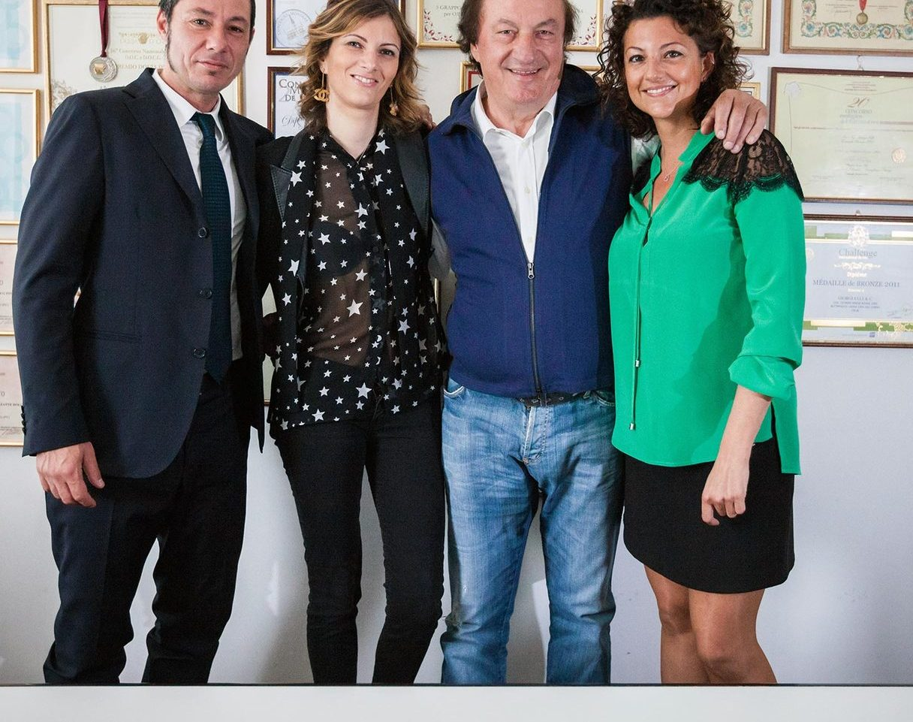
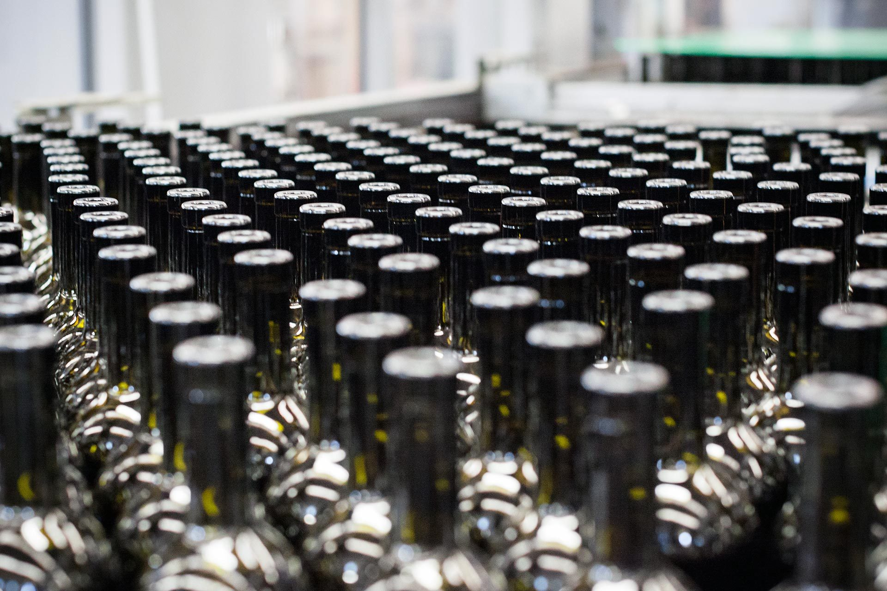
Il marchio di fabbrica
Trent'anni di Pinot Nero in bottiglia renana.
Il Pinot Nero è il prodotto che ha permesso all'azienda di evolversi e di spiccare il volo. Giorgi è stata la prima a proporlo su scala nazionale; oggi è il suo segno distintivo, insieme alla bottiglia renana lunga: un azzardo quando fu proposta, un successo dopo trent'anni.
I vini
La cantina, in fila.
Trentanove etichette in sei famiglie, dagli spumanti metodo classico ai Grandi Cru. Scorri e guardale una per una.
Spumanti
9 etichetteMetodo classico e Charmat. Pinot Nero e Chardonnay sono la base degli spumanti dell'Oltrepò.
Metodi classici
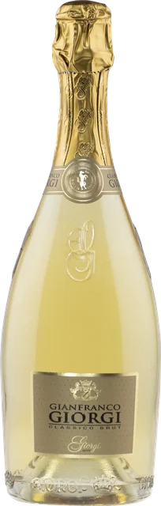
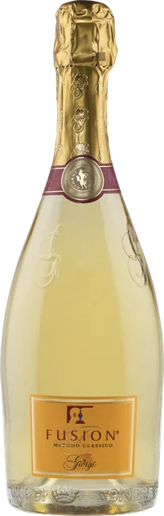
Metodi Charmat
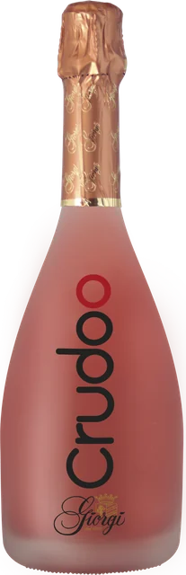
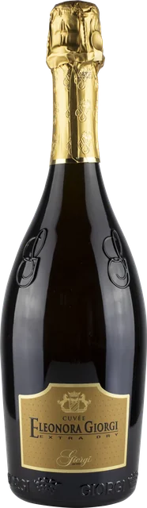
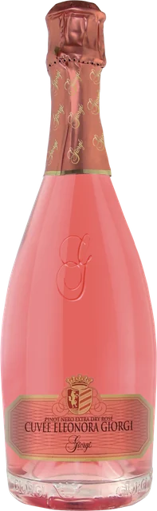
Vini bianchi
6 etichetteFrizzanti e fermi, dal Pinot Nero vinificato in bianco al Riesling.
Frizzanti
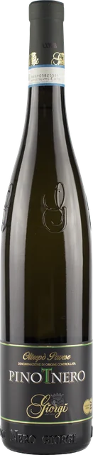
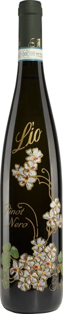
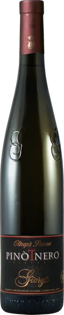
Fermi
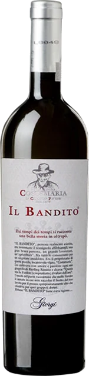
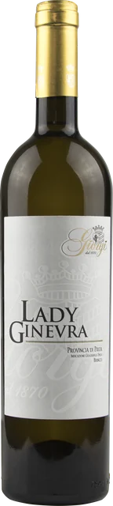
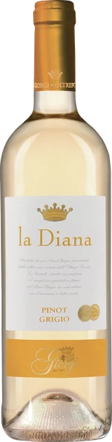
Vini rossi classici
4 etichetteBonarda e Barbera dell'Oltrepò Pavese, dal classico alla riserva.
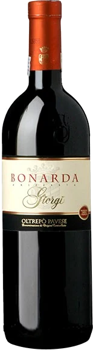
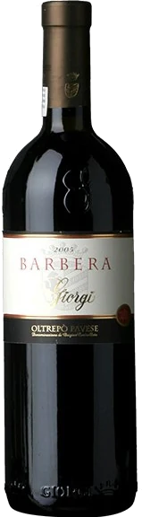
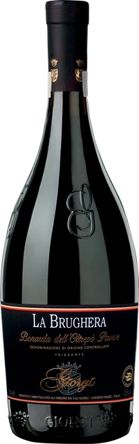
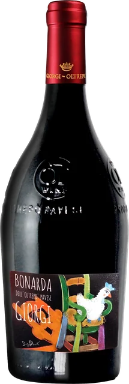
Grandi Cru e Barricati
6 etichetteButtafuoco, Barbera fermo, Pinot Nero rosso e rossi IGT della provincia di Pavia.
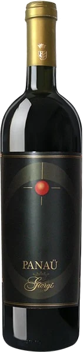
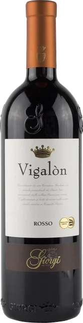
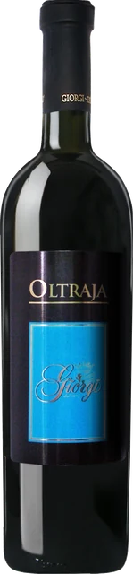
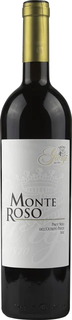
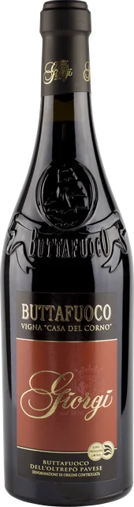
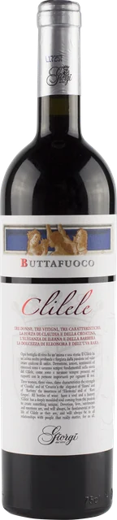
Vini dolci
8 etichetteMoscato, Malvasia, Sangue di Giuda: i dolci bianchi e rossi.
Bianchi
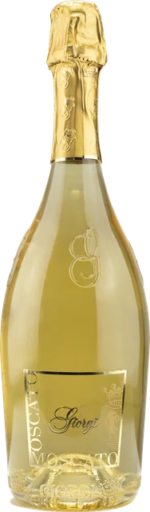
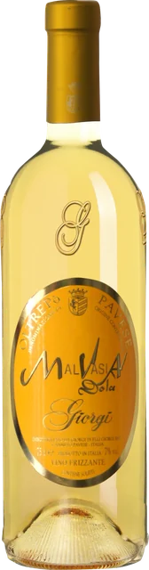
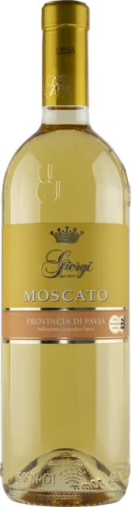
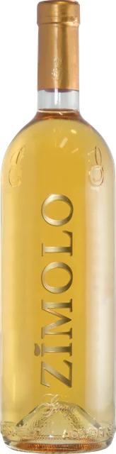
Rossi
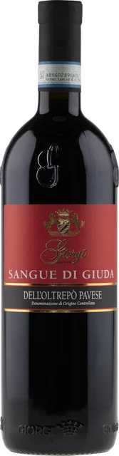
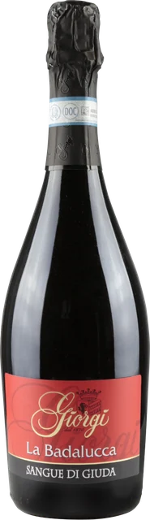
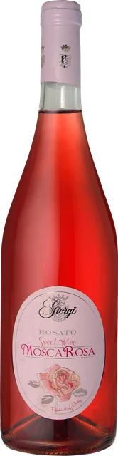
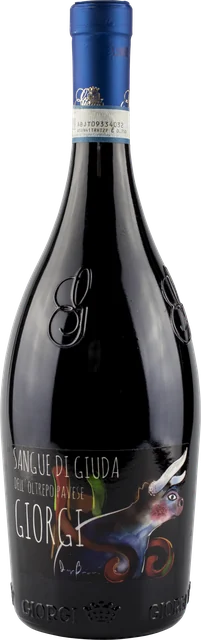
Linea Gerry Scotti
6 etichetteSei etichette della Linea Gerry Scotti.
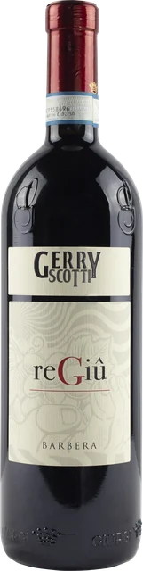
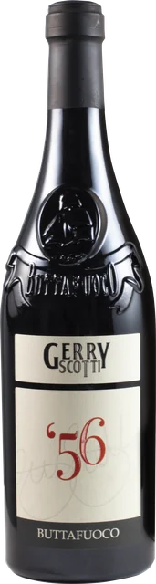
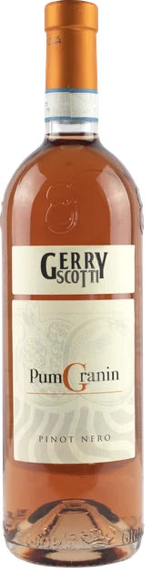
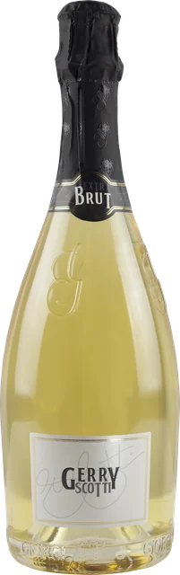
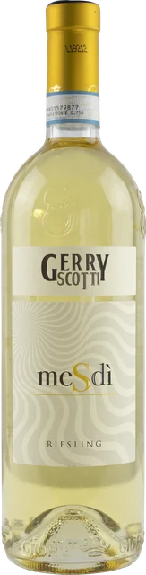
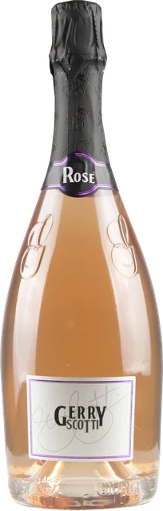
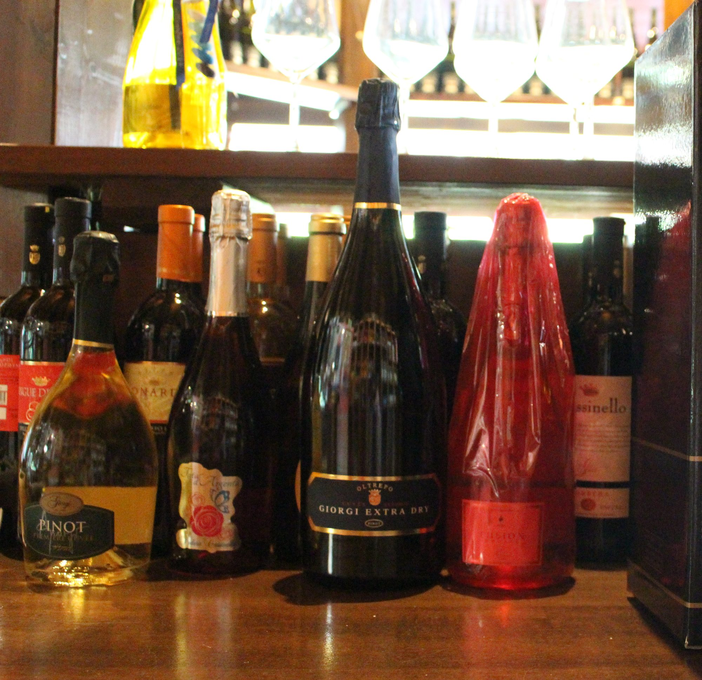
Enoteca
Solo Giorgi: vieni a degustare.
Una costruzione ottagonale in legno con ampie vetrate, accanto alla sede direzionale e al centro di imbottigliamento: un ambiente accogliente per degustazioni guidate da sommelier, dove la qualità dei vini Giorgi incontra i sapori del territorio.
È anche uno spazio aperto a eventi culturali su ambiente, saperi e tradizioni della valle Versa. A novembre e dicembre, nei weekend, si degusta il Crudoo accostato alle novità enogastronomiche dell'enoteca.
I vigneti
L'alta qualità nasce in vigna.
Giorgi ha valorizzato i vecchi vigneti di famiglia e ne ha selezionati di nuovi, badando che esposizione e composizione del terreno, sempre in alta collina, fossero ideali per ciascun vitigno.
Potatura castigata
Produzione per ceppo inferiore alla norma, per portare la qualità al massimo livello.
Concimazione naturale
Solo prodotti naturali. Le uve sono selezionate e raccolte nel preciso momento della maturazione.
Fermentazione controllata
Pigiatura e fermentazione rigorosamente controllate, con tradizione ed enologia innovativa.
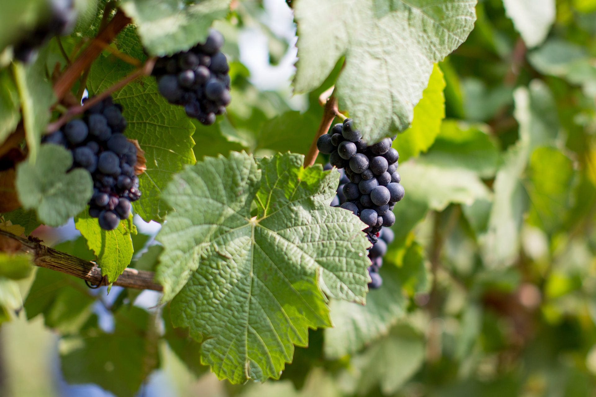
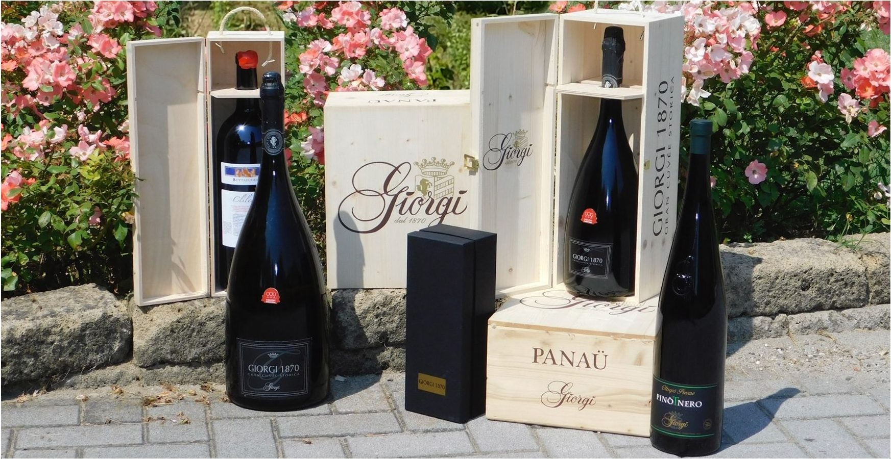
I premi
Bicchieri, grappoli, medaglie.
Giorgi ha vinto i più importanti premi internazionali e nazionali. Il Giorgi 1870 ha ottenuto i Tre Bicchieri del Gambero Rosso per sette anni consecutivi (notizia del 2015).
- 3Tre Bicchieri Gambero Rosso
- 5Cinque Grappoli, Sommelier
- 7anni consecutivi di Tre Bicchieri per Giorgi 1870 (2015)
Fraz. Camponoce 39/A
27044 Canneto Pavese (PV) – Italy
P. IVA 00501920185
Fax 0385 60440